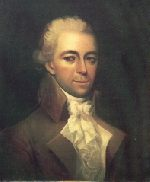

|
by Stefan Bielinski States Dyckman was born about 1755 on the family farm in northern Manhattan. He was the fourth of the ten children of Jacob Dyckman - a farmer and innkeeper. His father was descended from one of early inhabitants of Beverwyck, although the Dyckmans had not  lived in Albany for almost a century. After an unremarkable childhood, States Dyckman had relocated to Albany by the time of his father's untimely death in 1774. Soon, he was keeping company with prominent Albany royalists and was among those drinking to the King's health at Cartwright's Tavern in June 1776. Arrested with the others, he refused to support American resistance measures and was sent to the Tory jail. Summoned before the Albany Committee of Correspondence, he declined the invitation, was denounced as "uncooperative," and remained in jail. After more posturing, he was released on bail and eventually made his way to British-occupied New York City where he entered British service with the Quartermaster's Department. Profiting from wartime trading and contracting, this bachelor frequented both Manhattan and occupied Long Island. In 1779, he was sent to London to represent the accounts of the Quartermaster General. He stayed more than two years - cultivating useful relationships with British officials, other exiled American loyalists, and, as was his custom, with a variety of women from a range of backgrounds. He returned to New York in 1781 with a cargo of fine apparel. He re-established himself in British service and in wartime trading. But the next year, he was sent to London again to lobby for payment of the quartermaster's accounts. He stayed in England for most of the 1780s. As time passed, States Dyckman wanted to return to America - not to bustling and competitive New York City, but instead to Westchester County where he sought to "stand out among his neighbors." To that end, his brother began to acquire land in the lower Hudson Valley on his behalf. A long and circuitous journey brought him home to the Hudson Valley early in 1789. Over the next few years, at "King's Farm" he gained stature as a businessman and gentleman farmer. His plantation was under intense cultivation as its owner sought to create an English-style country estate. In 1794, the forty-ish bachelor married for the first time. His bride was eighteen-year-old Elizabeth Corne Kennedy - daughter of a neighboring Westchester family. The union produced a son and a daughter. He adopted another boy and girl - possibly the results of earlier liasons. With his wife, States also devoted considerable energy to the care of his sister, Cathalina, whose mental problems led to drug addiction and an unhappy marriage with Albany merchant Daniel Hale. Never in good health, States Dyckman suffered from re-occurring gout. He also suffered financial difficulties - causing him to liquidate his real estate and other holdings. In 1800, he sailed for England in hopes of gaining satisfaction for a number of wartime debts. Despite ever eroding health, Dyckman was able to recover substantial assets and returned home in 1804. Having rescued himself from "humiliating poverty," States Dyckman began building another estate called "Boscobel - named for a royal shrine he had visited in Shropshire. This grand project on Verplanck's Point consumed States Dyckman until his death on August 11, 1806. He was buried in the family plot at Kingsbridge.
This portrait by an unknown artist is in the collection of "Boscobel Restoration." It is copied here from Flexner's States Dyckman. Betsey Dyckman's interesting life and her close relationship with Dyckman are gracefully interpreted in Flexner, States Dyckman, chapters 12-17. |